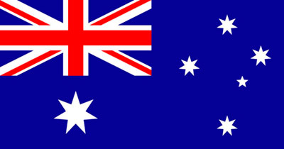

Bienvenido a Sídney
Sídney es catalogada como una de las 15 ciudades más visitadas del mundo, con millones de turistas viniendo cada año a ver atracciones como el Jardín Botánico, el Puerto de la Ciudad, el Parque Nacional Real, y la Casa de la Ópera.
Conocé Sídney
Ubicación e historia
Sídney es la ciudad más grande y poblada de Australia y Oceanía, con una población en su área metropolitana cercana a los 4,92 millones, según una estimación de 2015.
Es la capital del estado de Nueva Gales del Sur y fue el asentamiento de la primera colonia británica en Australia. Fue fundada en 1788 por Arthur Phillip y es la ciudad más antigua del país. Toma su nombre de Thomas Townshend, “Lord Sydney”, en aquel entonces ministro del Interior británico.
La ciudad está situada al sureste de Australia, a orillas de la amplia bahía de Sídney (Puerto Jackson). Destaca la Casa de la Ópera, el puente de la bahía de Sídney, o Harbour Bridge, y sus playas. El área metropolitana está rodeada de parques nacionales que contienen bahías y ríos.
Geografía
El área urbana de Sídney se encuentra en una cuenca costera, que es bañada y bordeada por el océano Pacífico al este, las Montañas Azules al oeste, el río Hawkesbury al norte y el parque nacional Real al sur. Se emplaza en una costa subemergente, donde el nivel del océano ha aumentado hasta inundar los valles de los ríos profundos (formando una ría) y tallando en la arenisca de hawkesbury. El Puerto Jackson, más conocido como la bahía de Sídney, es una de esas rías y es el mayor puerto natural del mundo.
Clima
El clima de Sídney se clasifica como cálido y templado. La precipitación en Sídney es significativa, con precipitaciones incluso durante el mes más seco. La temperatura media anual en Sídney se encuentra a 18.0 °C, y el promedio de lluvias es de 912 mm.
Idioma
Por su situación y por su total predominio, el inglés se ha convertido en el idioma nacional por excelencia, más concretamente, el ya reconocido como inglés australiano. Una variante que cuenta con un léxico y un acento propios, repletos de pequeñas diferencias con respecto al británico.
Demografía
Los habitantes de Sídney son llamados “sydneysiders”. La mayoría de los sydneysiders tiene antepasados británicos e irlandeses, aunque también italianos, griegos y de países asiáticos.
El censo de 2006 estableció que la ciudad de Sídney contaba con 4.119.190 habitantes en la división estadística de Sídney, de los cuales 3.641.422 vivían en el área urbana de la ciudad. El centro de la urbe es la zona más densamente poblada de Australia con 4023 personas por kilómetro cuadrado.
Bandera
Australia fue descubierta en el año 1766 por los ingleses, y durante muchos años - exactamente hasta 1901 - perteneció al Imperio Británico.
Por esta razón, esa “banderita” que aparece en la esquina superior izquierda de la bandera de Australia, en efecto, es la del Reino Unido. Esta bandera ocupa a su vez las banderas de otros muchos países que algún día pertenecieron al Imperio.
Instituciones culturales
Sídney tiene una amplia variedad de instituciones culturales. Otros lugares de interés son el City Recital Hall, el Teatro Estatal, el Teatro Real, el Teatro de Sídney y el Teatro Wharf y la icónica Ópera de Sídney, que tiene cinco salas capaces de albergar una amplia gama de estilos de interpretación, y es el hogar de la Ópera de Australia y de la Sinfónica de Sídney.
Sydney Harbour Bridge (Puente del puerto de Sídney)
El puente fue construido en 1932 y es el primer puente del puerto. Fue el puente de un solo arco más largo del mundo. Se puede subir con un guía.
Royal Botanic Gardens (Jardín Botánico Real)
Royal National Park (Parque Nacional Real)
Sydney Town Hall (Ayuntamiento de Sídney)
SYDNEY OPERA HOUSE (La Ópera de Sídney)
La Ópera de Sydney (Sydney Opera House) es el lugar más reconocible de la ciudad.
Este icónico edificio se inauguró en 1973. El edificio tiene una estructura orgánica muy famosa en forma de ‘velas’ con azulejos blancos. La ópera tiene una sala grande para conciertos, una sala para ópera y otras salas más pequeñas.
En el edificio se realizan obras de teatro, ballet, ópera o producciones musicales. Es sede de la compañía de Ópera de Australia, la Compañía de Teatro de Sídney y la Orquesta Sinfónica de Sídney. Está administrada por la Opera House Trust, un organismo público del gobierno estatal de Nueva Gales del Sur.
Es uno de los edificios más famosos y distintivos del siglo xx. No fue diseñado por un australiano, sino por el arquitecto danés Jorn Utzon. Desde el 2007 es Patrimonio de la Humanidad.
Características arquitectónicas
La Casa de la Ópera de Sídney es una construcción expresionista y con un diseño radicalmente innovador, conformado por una serie de grandes conchas prefabricadas, cada una tomada de la misma semiesfera, que forman los tejados de la estructura.
El Teatro de la Ópera cubre 1,8 hectárea (4,5 acres de tierra). Tiene 185 metros de largo y alrededor de 120 metros de anchura máxima. Se apoya en 580 pilares hundidos hasta una profundidad de 25 metros bajo el nivel del mar. Su fuente de alimentación tiene una capacidad equivalente al consumo eléctrico de una ciudad de 25 000 personas. La energía es distribuida por 645 kilómetros de cable.
Aunque a las estructuras de los tejados de la Casa de Ópera de Sídney se las denomina comúnmente como cáscaras, éstas de hecho no lo son en el sentido arquitectónico de la palabra, ya que están formadas por paneles prefabricados de hormigón que se apoyan en costillas prefabricadas del mismo material.
Las cáscaras están recubiertas con 1.056.006 azulejos de colores blanco brillante y crema mate, formando un tenue patrón en "V" invertida (chevrón); aunque vistas desde la distancia parecen de color blanco uniforme. Los azulejos fueron fabricados por la empresa sueca Höganäs AB y aunque están diseñados para que se limpien solos, se realiza un mantenimiento periódico de limpieza. Para mantener la uniformidad del color del cascarón y evitar que luzca parchado, se reutilizan y reparan los mismos azulejos que se han desprendido con el paso de los años. Durante el año 2015, por ejemplo, cayeron apenas 40 azulejos, por lo que el promedio de reparación es muy bajo.
Los dos grupos mayores de bóvedas que conforman el techo del teatro pertenecen cada uno al Salón de Conciertos (Concert Hall) y al del Teatro de la Ópera (Opera Theater). Los otros salones tienen como techo las agrupaciones más pequeñas de bóvedas. La escala de las cáscaras fue elegida para reflejar las necesidades de altura en el interior, con espacios bajos en la entrada que se elevan sobre las zonas de asientos hasta llegar a las altas torres de escena.
Un grupo mucho más pequeño del sistema de cáscaras se encuentra a un lado de las entradas, de la escalinata monumental y del restaurante de Bennelong.
Autores
- Apellido y Nombre: Gonzalez Chavez Pedro
- Edad: 32 años
- Email: pedro.gonzalez@davinci.edu.ar
- Apellido y Nombre: Scotto Rocío Belén
- Edad: 32 años
- Email: rocio.scotto@davinci.edu.ar